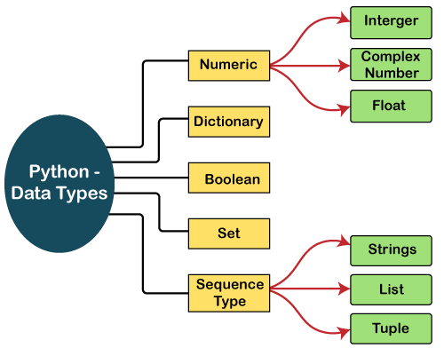

Datatypes
In programming, a data type is an attribute or classification that specifies which type of value a variable can hold. It defines the kind of data that a variable can represent and the operations that can be performed on that data. Different programming languages support various data types to accommodate different kinds of information and operations.

Numeric data types
It is again classified into three types:
1.integer
Represents whole numbers without any decimal points.
Examples:
#integer
a=10
type(a)
output:
"int"
2.float
Represents numbers with decimal points or in scientific notation.
Examples:
#float
a=3.78
type(a)
output
"float"
3.complex number
Represents numbers with real part and imaginary part
#complex number
a=2+6j
type(a)
print(a.real)
print(a.img)
output:
"complex"
2
6
Dictionaries
In Python, a dictionary is a mutable, unordered collection of key-value pairs. Each key in a dictionary must be unique, and it is associated with a specific value. Dictionaries are useful for organizing and retrieving data based on named keys rather than numerical indices. The data type for dictionaries in Python is dict.
#dictionaries
a={'u':1,'t':4,'y':8}
type(a)
print(a['u'])
print(a.keys())
print(a.items())
output:
"dict"
dict_keys(['u', 't', 'y'])
dict_values([1, 4, 8])
Boolean
In Python, the boolean data type is a built-in data type used to represent truth values. The two boolean values in Python are True and False. Booleans are often used in control flow statements, such as conditional statements (if, elif, else) and loops, to make decisions based on conditions.
EXamples:
#boolean
a=True
type(a)
output:
"bool"
set datatype
In Python, a set is an unordered and mutable collection of unique elements. The data type for sets is set. Sets are useful for tasks that involve testing membership, eliminating duplicate entries, and performing mathematical operations like union, intersection, difference, and symmetric difference.
#set
a={1,2,3,4,5}
type(a)
a.add(7)
output:
"set"
b={4,5}
c={4,7}
print(b.union(c))
print(b.difference(c))
print(b.intersection(c))
output:
{4,5,7}
{5}
{4}